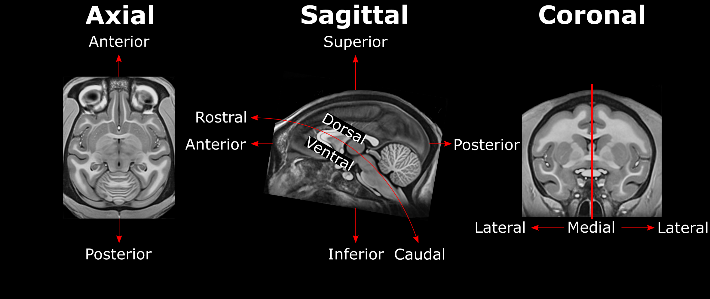

Edit this page
Open and issue
Macaca
Warning
Prior to placing the fiducials, ensure you have run the Linear Transform.
Preparation¶
3D Slicer¶
Download and use 3D Slicer 4.10.2 (for the time being DO NOT use version 4.11 or above)
Image Templates¶
Download template files:
Anatomical Direction Guide¶

Fiducials¶
1. AC [midline]¶
Name: 1
Description: AC
Acronym: AC
- Place at the center of the commissure.
2. PC [midline]¶
Name: 2
Description: PC
Acronym: PC
- Place at the center of the commissure
3. infracollicular sulcus [midline]¶
Name: 3
Description: infracollicular sulcus
Acronym: ICS
- Inferior part of sulcus of inferior colliculi at the midline junction of inferior colliculi
- Inferior most boundary of longitudinal (rostral-caudal) intercollicular sulcus
4. Pontomesencephalic junction [midline]¶
Name: 4
Description: PMJ
Acronym: PMJ
- At the intraventricular junction but because the junction tapers off gradually, choose the ventral/inferior/pontine side of the junction. Using the sagittal view, find the junction at midline, next verify that you are at the junction by checking the axial view.
5. Superior interpeduncular fossa [midline]¶
Name: 5
Description: superior interpeduncular fossa
Acronym: SIPF
- Most superior axial slice showing the interpeduncular fossa
- Use coronal slice to help optimize location at boundary of 3rd ventricle and surrounding brain
- Commentary: useful fiducial location for deep brain stimulation (DBS) since subthalamic nucleus close by
6. Right superior lateral mesencephalic sulcus¶
Name: 6
Description: R superior LMS
Acronym: RSLMS
- The lateral mesencephalic sulcus runs superior-to-inferior along the midbrain bilaterally. The following 4 points provide superior and inferior bounds of this sulcus superiorly and inferiorly.
- Localize using axial slices close to the location of the superior interpeduncular fossa (5) at the boundary of CSF and brain.
- Use the coronal and sagittal views to optimize the location so that the point at the depth of this sulcus is best approximated. Note: In NHP, the superior LMS is just inferior and medial to the capsule of the medial geniculate nucleus.
7. Left superior lateral mesencephalic sulcus¶
Name: 7
Description: L superior LMS
Acronym: LSLMS
- As in 6
8. Right inferior lateral mesencephalic sulcus¶
Name: 8
Description: R inferior LMS
Acronym: RILMS
- Using the axial view, level the slice intersection to the Pontomesencephalic Junction (4th fiducial) as a starting point
- Localize at junction between midbrain and pons using the axial slices
- Refine positioning using sagittal view (at the change in angle of brainstem at the PMJ)
- Note: The inferior LMS should be continuous with the superior LMS when scrolling through the axial images since they are part of the same sulcus.
9. Left inferior lateral mesencephalic sulcus¶
Name: 9
Description: L inferior LMS
Acronym: LILMS
- As in 8
10. Culmen [midline]¶
Name: 10
Description: culmen
Acronym: CUL
- Jump to AC or another midline AFID to get to the mid-sagittal slice, then place using the sagittal view
- Most superior point of cerebellar vermis (one of the vermian lobules)
- Axial view will allow you to choose the most superior part of the vermis; Scroll through this view while remaining in midline until you reach the apex.
11. Intermammillary sulcus [midline]¶
Name: 11
Description: intermammillary sulcus
Acronym: IMS
- Click to jump to AC landmark and place using the sagittal view
- Using the coronal view get to the midpoint between the mamillary bodies.
- Remember to place at the border of the grey matter. Refine this using axial view where border is most clear.
12. Right mammillary body¶
Name: 12
Description: R MB
Acronym: RMB
- Place at the center of the mammillary body
13. Left mamillary body¶
Name: 13
Description: L MB
Acronym: LMB
- As in 12
14. Pineal gland [midline]¶
Name: 14
Description: pineal gland
Acronym: PG
- Click to jump to the AC landmark on the sagittal view and localize the most superior border of AC on sagittal view, then proceed to go posterior until past PC.
- Place AFID in the middle of gland (use all views to correctly place this point). This can be challenging if the pineal gland is elongated, but approximate the middle as best possible.
- Occasionally the pineal gland is calcified, which makes it more difficult to find the center of the gland. Be sure to scroll back and forth in all views to find the true center point regardless of asymmetry of calcifications
15. Right lateral aspect of frontal horn at AC¶
Name: 15
Description: R LV at AC
Acronym: RLVAC
- Defined at same coronal slice as AC (jump to it)
16. Left lateral aspect of frontal horn at AC¶
Name: 16
Description: L LV at AC
Acronym: LLVAC
- As in 15
17. Right lateral aspect of frontal horn at PC¶
Name: 17
Description: R LV at PC
Acronym: RLVPC
- Defined at same coronal slice as PC (jump to it)
- The ventricle is often curved so choose a location that is maximally superior and lateral.
18. Left lateral aspect of frontal horn at PC¶
Name: 18
Description: L LV at PC
Acronym: LLVPC
- As in 17
19. Genu of corpus callosum [midline]¶
Name: 19
Description: genu of CC
Acronym: GENU
- Jump to AC and place using sagittal view
- Optimize using coronal view as most anterior point of the corpus callosum on coronal slice.
- Midline vasculatures are prominent in this region. Adjusting contrast allows for differentiation between grey matter and vessels. Refine fiducial using axial view.
20. Splenium of the corpus callosum [midline]¶
Name: 20
Description: splenium of CC
Acronym: SPLE
- Jump to AC and place using sagittal view.
- Proceed posterior and optimize point using coronal view as the in inferior-most point on coronal section. Refine the border using axial view.
21. Right anterolateral temporal horn¶
Name: 21
Description: R AL temporal horn
Acronym: RALTH
- Jump to AC and using sagittal view locate the posterior border of AC.
- In the coronal view, this fiducial should be inferior and lateral to the amygdala.
- In the sagittal view, it is anterior to hippocampus separated by the CSF of the temporal horn of the lateral ventricle.
- In the axial view, it is the anterolateral most point of the temporal horn.
- Choose a more ventral/inferior point on the coronal view.
- Place at the boundary of CSF and white matter
22. Left anterolateral temporal horn¶
Name: 22
Description: L AL temporal horn
Acronym: LALTH
- As in 21
23. Right superior AM temporal horn¶
Name: 23
Description: R superior AM temporal horn
Acronym: RSAMTH
- Note: there are both superior and inferior anteromedial (AM) temporal horn fiducials.
- In the coronal view, the superior AM temporal horn is located superior to the head of the hippocampus at the level of the optic tract.
- In the axial view, it is situated in the uncus and bounded anteriorly by the amygdala and posteriorly by the hippocampus.
- Proceed lateral while monitoring the coronal view. Place fiducial at the superior hippocampal-amygdalar transition area (HATA). Verify in the axial view.
-
NOTE: there is also an inferior anteromedial temporal horn
-
- alias: Rhoton's uncal recess: "narrow medially projecting space between hippocampal head & ventricular surface of amygdala located lateral to uncal apex"
- Place at the boundary of CSF and brain
24. Left superior AM temporal horn¶
Name: 24
Description: L superior AM temporal horn
Acronym: LSAMTH
- alias: Rhoton's left uncal recess
- As in 23
25. Right inferior AM temporal horn¶
Name: 25
Description: R inferior AM temporal horn
Acronym: RIAMTH
- In the coronal view, the inferior AM temporal horn is located inferior to the amygdala.
- In the axial view, it is bounded anteriorly by the amygdala and posteriorly by the hippocampus.
- In the sagittal view, it is bounded posteriorly by the hippocampal head and amygdala. The ventricle should appear in the sagittal view as a small opening at this point.
- Verify that the fiducial is place at the junction of the ventricle-grey matter in the axial view.
26. Left inferior AM temporal horn¶
Name: 26
Description: L inferior AM temporal horn
Acronym: LIAMTH
- Like in 25
- Jump to 22 (left AL temporal horn) and scroll the find the most medial showing of the CSF
27. Right indusium griseum origin¶
Name: 27
Description: R indusium griseum origin
Acronym: RIGO
- The indusium griseum is also known as the "supracommissural" portion of the hippocampus running along the dorsal part of the corpus callosum. The objective with this fiducial is to identify its origin. This is where it diverges from the hippocampus proper.
- On the sagittal view, this is the point where gray matter separate from the hippocampus proper begins to "takeoff" below splenium and becomes pointed.
- On the coronal view, with high resolution images like the NMTv1.3 template, there is a sharp change in the gray matter thickness of the posterior hippocampus proper (thinner) and where it transitions to the indusium griseum (thicker). This sharp change is the location of the indusium griseum origin.
- Verify that the fiducial is at the junction of white and grey matter.
- Other pointers: The indusium griseum is bounded on the sagittal and coronal views by the posterior-inferior edge of the atrium of the lateral ventricle.
28. Left indusium griseum origin¶
Name: 28
Description: L indusium griseum origin
Acronym: LIGO
- As in 27
29. Right ventral occipital horn¶
Name: 29
Description: R ventral occipital horn
Acronym: RVOH
- Best defined in the coronal view at the ventral/inferior portion of the occipital horn (try to choose the last coronal slice in which this feature is visible to ensure point delimits the posterior most margin of the occipital horn possible)
- If it is hard to see on the coronal view then you can make the first placement using the axial view (make sure the view is on the right side of the brain).
- Optimize using other views
30. Left ventral occipital horn¶
Name: 30
Description: L ventral occipital horn
Acronym: LVOH
- As in 29
31. Right olfactory sulcal fundus¶
Name: 31
Description: R olfactory sulcal fundus
Acronym: ROSF
- This fiducial is close to the genu of the corpus collosum (#19).
- Scroll back and forth in the sagittal view until you find the most anterior aspect of genu on the right hemisphere. (Typically before genu becomes continuous with other white matter structures). Note: ensure you are on the appropriate hemisphere (in this case the right).
- In the coronal view, verify that the point is placed at the sulcal fundus (i.e. at the depth of sulcus and at the boundary of gray matter-white matter).
- Note: One helpful pointer is to consider the olfactory sulcal fundus relative to the anterior skull base. This feature is much easier to place in humans because the anterior skull base is flat, while in macaques the skull base in angled (in an anterosuperior to posterioinferior direction). With this adjustment in mind, place the fiducial at the posterior and superior aspect of the apex (in the sagittal view) then reoptimize in the other views as necessary.
32. Left olfactory sulcal fundus¶
Name: 32
Description: L olfactory sulcal fundus
Acronym: LOSF
- As in 31